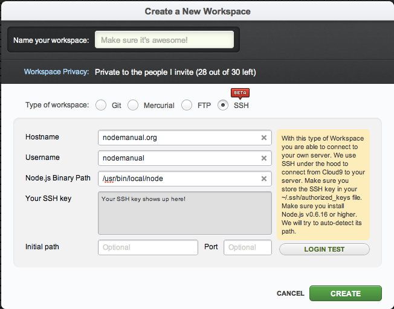
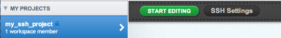

Running Your Own SSH Workspace
You have access to an incredibly powerful feature of Cloud9 that we like to call "running your own workspace."
If you own a server that you can SSH into, you can log into that machine with Cloud9 and work on your projects remotely. To put this into perspective, you could have an entire toolchain set up on this machine--say, make with gcc, or ant with Java--edit the files with Cloud9 IDE, and build your toolchain via the IDE's terminal. Here's a video demonstrating how you could instantly compile a C program using an SSH workspace and Cloud9:
Connection Prerequisites
In order to connect Cloud9 with a server you own, you'll need two things:
- Node.js installed on the server. This version must be between Node.js version 0.6.16 and the latest 0.8.x.
- Your public SSH key must be saved on the server at ~/.ssh/authorized_keys. This is to ensure the utmost security between your client computer and the machine you're attempting to access. Cloud9 provides you with your SSH key in the workspace dialog; it is up to you to save it to the appropriate path. For more information on SSH keys, see this article.
Tip:
If you're behind a firewall, you can identify which IP address and port Cloud9 is running on by typingecho $OPENSHIFT_INTERNAL_IP and echo $OPENSHIFT_INTERNAL_PORT into the console. You can use this information to open any blocked connections.
Creating an SSH Workspace
Once you've got those requirements set up, here's how you can create an SSH workspace of your own:
In the Projects tab on the Dashboard, click on the  next to MY PROJECTS and choose the option to Create a new project (see "Creating a New Project" if you need to review the steps to create a new project):
next to MY PROJECTS and choose the option to Create a new project (see "Creating a New Project" if you need to review the steps to create a new project):
In the pop-up window that appears, select SSH for the project type:

You don't need to fill out every option provided by the dialog. Let's review what they are:
- Hostname: the domain name or IP address of the machine running your SSH server.
- Username: your username for the SSH server.
- Node.js Binary Path: the locaton of your Node.js binary. If you're not sure where it is, you can always let Cloud9 guess it for you. Otherwise, on your server, type
which node, to see the full path - Initial path: this is an optional parameter. You can set it as an absolute (starts with
/) path. Otherwise, it'll be set to a relative path, and Cloud9 assumes that you want to start from the folder your SSH server leaves you after login (usually the home or default folder). - Port: this is an optional parameter. Cloud9 will automatically try to connect on port 22
Warning:
Be careful not to put an initial path that leaves you in a location where you don't have write privileges, as that could cause problems!Fill in your SSH details and click the Login Test to verify that the settings are correct. If the test succeeds, go ahead and click Create to create your SSH connection. You'll then see your project in the Dashboard under My Projects: 
When your new SSH is selected, you will see three buttons: Start Editing, SSH settings, and Delete (on the far right). SSH settings gives you access to the settings you just filled in, as well as the login test. This is useful to use in case your login credentials have changed.
Warning:
Make sure that you copied your SSH key correctly! Trailing spaces are significant, so make sure your text editor on your server is not modifying the key that Cloud9 is providing you with.To get started with your SSH project, click on the Start Editing button. You'll instantly be taken to the editor, and have full access to your server's resources. As you can see in the video above, this means you can do exciting things like compiling C programs.